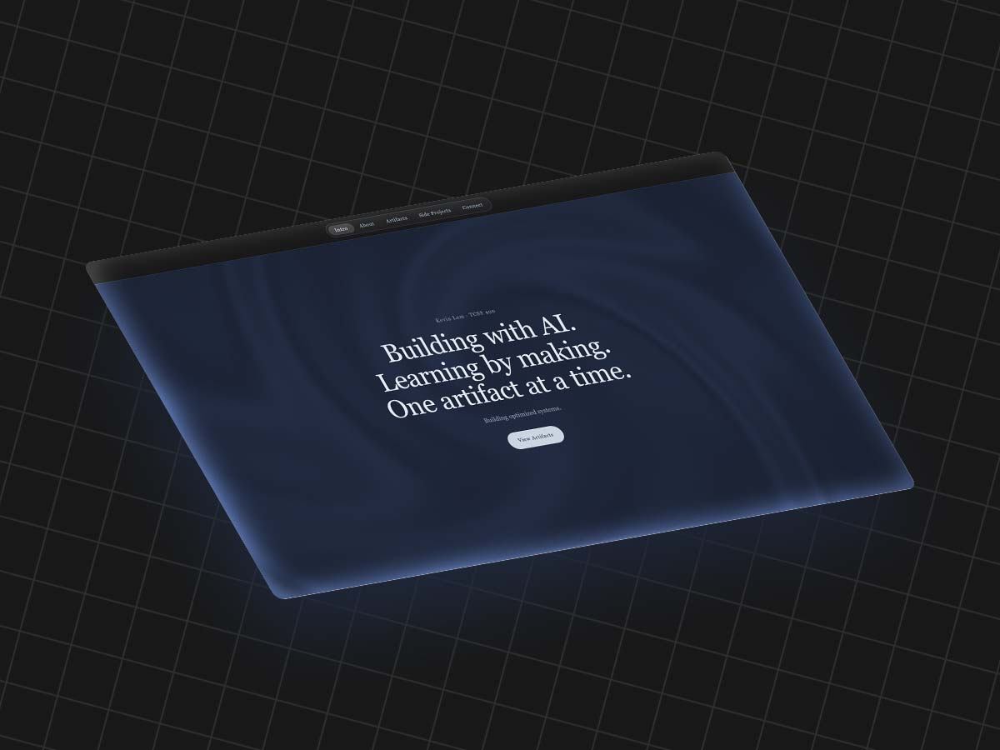

Personal Portfolio
A single-page portfolio with a card for each artifact in the course, built with plain HTML, CSS, and JavaScript.
I built this portfolio with Claude's web chat and deployed it on GitHub Pages, which I had never set up before. Early on, Claude jumped ahead and built a theme-comparison page before I understood hosting, so I stopped it and we learned the deployment steps first. I also had to clarify my card layout a few times before it matched what I pictured. The biggest thing I learned is to describe the exact layout I want, and to check what the AI tells me against the real documentation instead of trusting it. Whenever I hit Claude's limits, I switched to ChatGPT and Gemini, but I found their quality lacking compared to Claude, and they were sometimes close to useless. Still, the way I had to phrase my requests for them taught me to ask Claude more clearly, which brought out better code.